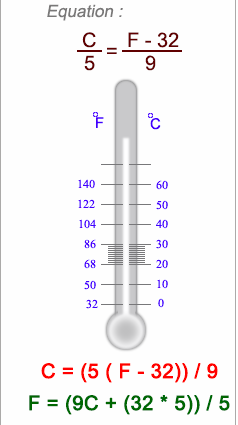

1. Write a program to convert Fahrenheit temperature to Celsius. Here are the things that needs to be implemented as a
part of this question:
a. Ask the input from the user for Fahrenheit using a text field
b. As soon as the user types in the Fahrenheit number in the text field, the result should display immediately in the
div below
c. Hence, there should not be any submit button
d. Hint: Use onkeyup event. Formula is : C = (F - 32) * 5/9
e. Don't display the decimal values - but you should accept decimal values from the user
f. If the user enters any invalid values (strings) ) then you should make the input box border red and prompt user to
enter correct values

Insert a number into one of the input fields below:
degrees Fahrenheit
degrees Celcius
Note that the Math.round() method is used, so that the result will be returned as an integer.